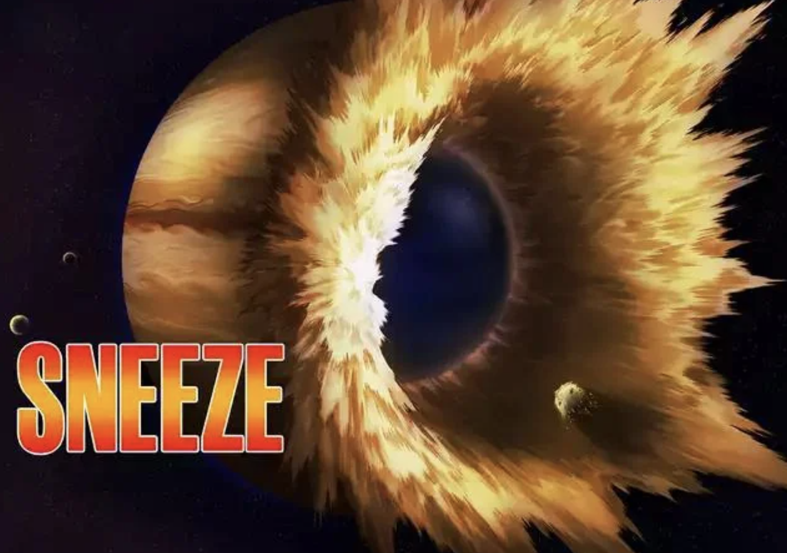

Breaking the Limiter: This core aspect of Saitama's character implies he surpassed human limitations, potentially achieving infinite potential for growth. Goku, despite transformations and training, seems bound by Saiyan biology and eventually reaches a plateau.
Power: Saitama has never used his full strength, defeating all opponents with casual punches. This hints at a massive hidden reserve, potentially exceeding even Goku's strongest forms.
during his battle with Garou, Saitama unleashes a casual sneeze with unimaginable force. This sneeze blows away the entire atmosphere of Jupiter, a gas giant planet with over 1,000 times the volume of Earth. This implies his casual actions possess power vastly exceeding anything Goku has displayed.
While Jupiter and the moon are different in size and composition, this feat demonstrates the absurd level of power Saitama wields even when not taking a fight seriously. It suggests Saitama's true potential far exceeds even his strongest displayed punches.
The fact that Saitama achieves this with a sneeze, an involuntary action, further supports the argument that his true power remains untapped. This unpredictability could be a significant advantage against Goku, who relies on transformations and training to access his full power.